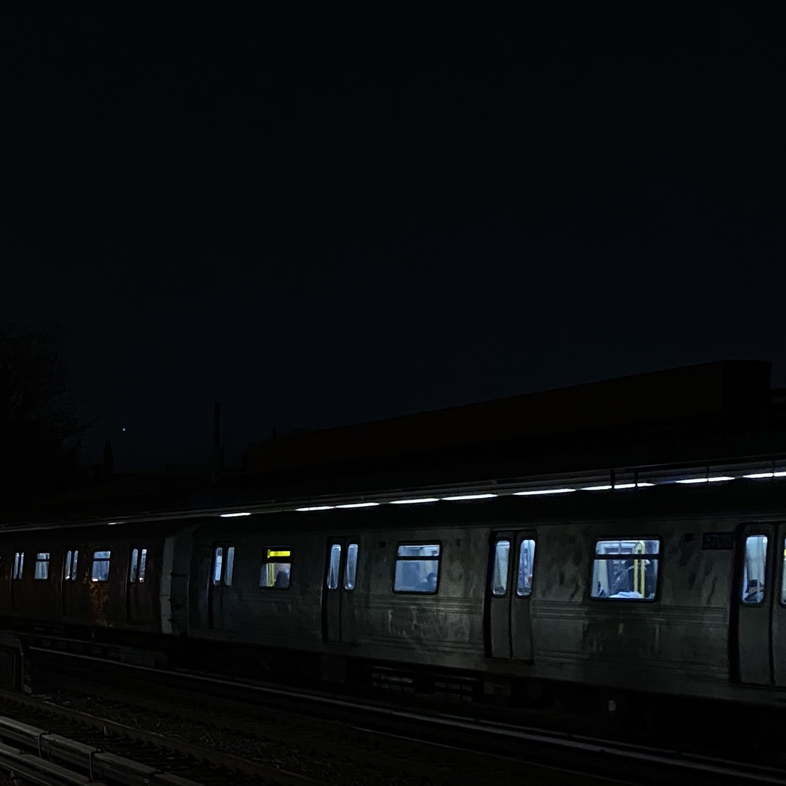

Audio

NYC Subway Morning
Gabriela Z
This project illustrates the experience of traveling on the NYC subway while listening to music through headphones. I chose this project because it contrasts the loud and chaotic atmosphere of the subway with the peaceful and intimate atmosphere of music. I mixed several audio samples, such as the ambiance of the subway, the sounds of the train movement, and the instrumental chill background music, and applied several effects such as fade in/out, noise reduction, and reverb in Audacity. The most difficult part of this project was mixing the train sound and the music so that they wouldn’t overpower each other, which I accomplished by adjusting the volume levels and using the envelope tool, as well as the walking, which was also pretty difficult to edit, especially knowing when to slow down or speed up.